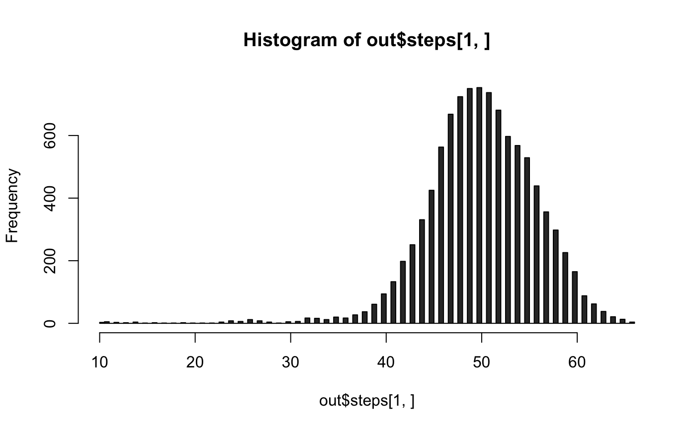
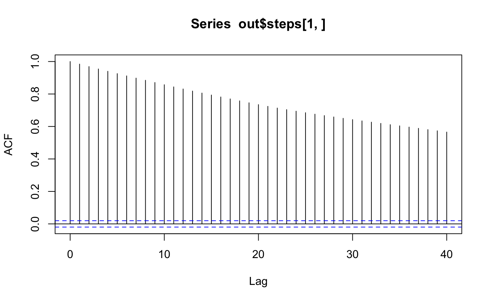
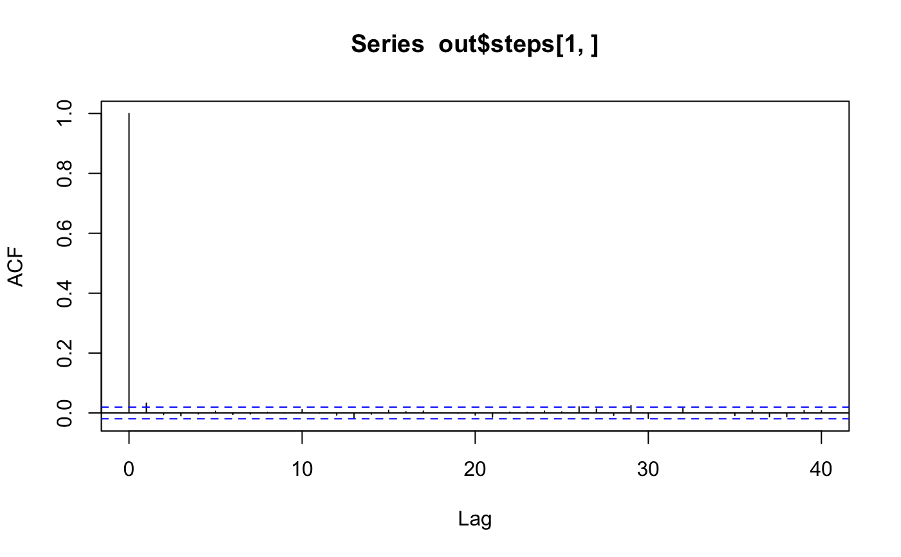
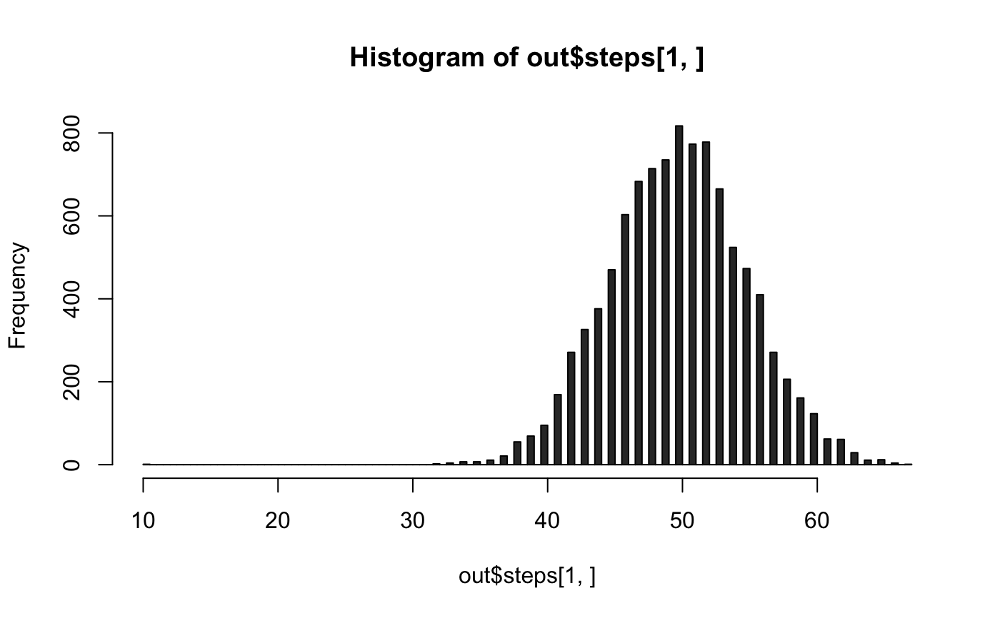

metropolis.RdGiven a starting table (as a vector) and a collection of moves, run the Metropolis-Hastings algorithm starting with the starting table.
metropolis( init, moves, iter = 1000L, burn = 0L, thin = 1L, dist = c("hypergeometric", "uniform"), engine = c("C++", "R") ) rawMetropolis(init, moves, iter = 1000, dist = "hypergeometric")
| init | the initial step |
|---|---|
| moves | the moves to be used (the negatives will be added); they are arranged as the columns of a matrix. |
| iter | number of chain iterations |
| burn | burn-in |
| thin | thinning |
| dist | steady-state distribution; "hypergeometric" (default) or "uniform" |
| engine |
|
a list containing named elements
steps: an integer matrix whose columns represent individual
samples from the mcmc.
moves: the moves supplied.
accept_prob: the empirical transition probability of the
moves, including the thinned moves.
accept_count: the numerator of accept_prob.
total_count: the numerator of total_prob.
See Algorithm 1.1.13 in LAS, the reference below.
Drton, M., B. Sturmfels, and S. Sullivant (2009). Lectures on Algebraic Statistics, Basel: Birkhauser Verlag AG.
## basic use ############################################################ # move up and down integer points on the line y = 100 - x # sampling from the hypergeometric distribution # note: negative moves are added internally init <- c(10L, 90L) moves <- matrix(c(1,-1), ncol = 1) # it helps running each of these lines several times to get a feel for things metropolis(init, moves, iter = 10, burn = 0, thin = 1)#>#>#> $steps #> [,1] [,2] [,3] [,4] [,5] [,6] [,7] [,8] [,9] [,10] #> [1,] 10 10 11 12 12 12 13 13 14 15 #> [2,] 90 90 89 88 88 88 87 87 86 85 #> #> $moves #> [,1] #> [1,] 1 #> [2,] -1 #> #> $accept_prob #> [1] 0.5555556 #> #> $accept_count #> [1] 5 #> #> $total_count #> [1] 9 #>metropolis(init, moves, iter = 10, burn = 0, thin = 1, dist = "uniform")#>#>#> $steps #> [,1] [,2] [,3] [,4] [,5] [,6] [,7] [,8] [,9] [,10] #> [1,] 10 11 10 11 12 13 12 13 14 13 #> [2,] 90 89 90 89 88 87 88 87 86 87 #> #> $moves #> [,1] #> [1,] 1 #> [2,] -1 #> #> $accept_prob #> [1] 1 #> #> $accept_count #> [1] 9 #> #> $total_count #> [1] 9 #>metropolis(init, moves, iter = 10, burn = 0, thin = 1, engine = "R")#>#>#> $steps #> [,1] [,2] [,3] [,4] [,5] [,6] [,7] [,8] [,9] [,10] #> [1,] 10 10 10 10 10 10 10 10 10 10 #> [2,] 90 90 90 90 90 90 90 90 90 90 #> #> $moves #> [,1] #> [1,] 1 #> [2,] -1 #> #> $accept_prob #> [1] 0 #> #> $accept_count #> [1] 0 #> #> $total_count #> [1] 9 #>metropolis(init, moves, iter = 10, burn = 0, thin = 1, engine = "R", dist = "uniform")#>#>#> $steps #> [,1] [,2] [,3] [,4] [,5] [,6] [,7] [,8] [,9] [,10] #> [1,] 10 11 12 11 10 11 10 9 8 9 #> [2,] 90 89 88 89 90 89 90 91 92 91 #> #> $moves #> [,1] #> [1,] 1 #> [2,] -1 #> #> $accept_prob #> [1] 1 #> #> $accept_count #> [1] 9 #> #> $total_count #> [1] 9 #># a bigger simulation iter <- 1e4 out <- metropolis(init, moves, iter = iter, burn = 0)#>#>## thinning to reduce autocorrelation with the thin argument ############################################################ out <- metropolis(init, moves, iter = iter, thin = 200)#>#>## burn in with the burn argument ############################################################ set.seed(1L) metropolis(init, moves, iter = 10, burn = 0, thin = 1, engine = "R")$steps#>#>#> [,1] [,2] [,3] [,4] [,5] [,6] [,7] [,8] [,9] [,10] #> [1,] 10 10 10 10 11 12 12 12 12 13 #> [2,] 90 90 90 90 89 88 88 88 88 87#>#>#> [,1] [,2] [,3] [,4] [,5] [,6] [,7] [,8] [,9] [,10] #> [1,] 10 10 10 10 11 12 12 12 12 13 #> [2,] 90 90 90 90 89 88 88 88 88 87#>#>#> [,1] [,2] [,3] [,4] [,5] #> [1,] 12 12 12 12 13 #> [2,] 88 88 88 88 87#>#>#> [,1] [,2] [,3] [,4] [,5] [,6] [,7] [,8] [,9] [,10] #> [1,] 10 10 11 12 12 13 14 15 15 15 #> [2,] 90 90 89 88 88 87 86 85 85 85#>#>#> [,1] [,2] [,3] [,4] [,5] [,6] [,7] [,8] [,9] [,10] #> [1,] 10 10 11 12 12 13 14 15 15 15 #> [2,] 90 90 89 88 88 87 86 85 85 85#>#>#> [,1] [,2] [,3] [,4] [,5] #> [1,] 13 14 15 15 15 #> [2,] 87 86 85 85 85